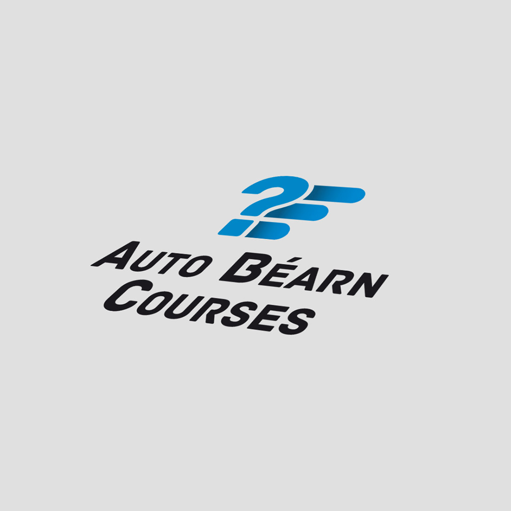
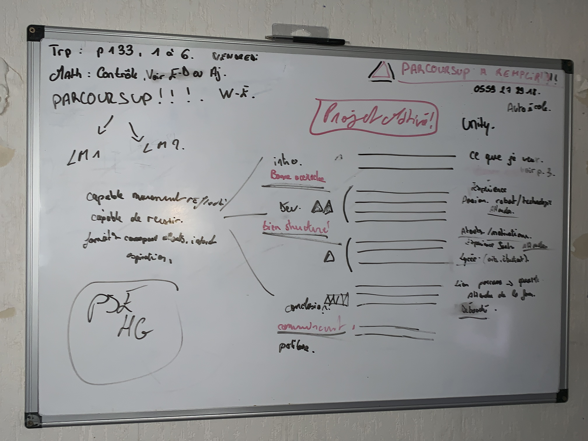

Bonjour et Bienvenue
Je m'appelle Eren VARLI, j'ai 17 ans, je réside à Pau 64000 j'étudie au Lycée Montpensier à l'Immaculée Conception de Pau.
Ce site va parler de moi, de ce que je fais, ce que je sais faire, mes expériences, et mes futurs projets.
L’intérêt de ce site est de vous expliquer ce que je ne pourrais pas dire sur Parcoursup¹ afin d’en savoir plus sur moi, et pourquoi moi.
Parcoursup = Plateforme nationale de référence pour l’offre de formation du premier cycle de l’enseignement supérieur.
Le Transport
J’ai passé mes années de lycée dans le milieu du transport, Et durant ces deux années j’ai appris beaucoup de choses.
J’ai également effectué divers PFMP (Période de Formation dans le Milieu Professionnel).
Liste de mes PFMP :
Béarn Courses Express (BCE), une période d’un mois durant ma première année.
DHL Express, également une période qui fut duré un mois, la grandeur et les activités de l’entreprise m’ont fasciné.Auto Béarn Courses (ABC), entreprise qui s’occupe du transport national comme international, cette entreprise m’a beaucoup appris,
ils sous traitent également Amazon, pendant une durée de deux mois j’ai effectué les activités d’agent d’exploitation.



Au cours de ces PFMP j’ai acquis de nombreuses expériences ;
La tarification en messagerie,
Les tournées, Les litiges, L’organisation des opérations de Transport et leurs suivies, La communication avec la clientèle, Le dispatching et la logistique.
Durant mes études, j'ai aussi également appris à maîtriser les notions
essentielles pour le transport c'est à dire en Géographie, le Code de la route, les différents types et dimensions de véhicules, le CNR, la Réglementation sociale Européennes (RSE),le chronotachygraphe,
les incoterms, la douane, le fret aérien et le fret maritime.Grâces à ces expériences et études, j’ai eu l’opportunité de passer
Le Concours Générale des Métiers du transport de cette année.Le transport est un domaine rempli de richesse,
que ce soit dans le passé ou dans le futur. Ce milieu est très vaste, on y trouve différents métiers et moyens. À l’avenir dans ce milieu, je souhaiterais être agent d’exploitation, les activités de ce dernier me fascinent beaucoup.L'informatique
D'où vient cette passion?
J’ai toujours été fasciné par l’intelligence artificielle et la nouvelle technologie.
Ces derniers m’ont poussé à en savoir plus sur les divers langages informatiques. CSS, HTML et Python, ces langages m’ont toujours fasciné. Pendant mes deux années de lycée, lors de mes temps libres j’ai beaucoup codé.J’ai effectué beaucoup de recherches sur YouTube pour apprendre à coder,
et certaines activités telle la création d’un site web avec HTML et CSS, ou bien le piratage éthique avec Python, ont confirmé ma soif d’apprendre. J’ai donc pris des cours en ligne avec Jonathan Roux, un développeur qui donne des cours en ligne de qualités sur Udemy.Mon Projet:
L’intérêt de ce site est de montrer que je ne suis pas sans expérience, l’informatique est un domaine qui me passionne beaucoup,
et si j’en ai l’opportunité je voudrais même en vivre. En effet, si je suis accepté dans votre établissement, je souhaiterais faire un BAC + 5 afin d’être dans l’ingénierie en informatique.Création du site, et pourquoi.
Quel-est l'interêt de ce site?
Comme dis précédemment l’intérêt de ce site est de vous démontrer mon savoir-faire,
que je suis capable d'avoir les capacités nécaissaire pour intégrer le milieu, mon site est lisible et clair,mais si on regarde tout le code dérrière, j'en suis certains qu'il y a encore des notions à apprendre, et je veux apprendre.Comment ai-je fais ce site?
Je vais expliquer le processus étape par étape afin que vous puissiez voir ma méthode. Par ailleur, je ne dispose que d'une journée pour le faire.
Étape 1
Je me suis tout d’abord posé des questions : Qui suis-je ?
Que fais-je? Comment ai-je fait ce site et pourquoi ?
Étape 2
L’étape 2 consiste à choisir le format du site,
combien de partie le site va contenir et ce que je vais mettre dans chaque partie.
Étape 3
C’est une étape un peu plus complexe, en effet, il a fallu que je dessine mon site,
et que je schématise l’ordre les paragraphes à écrire afin de donner le design idéal pour mon site.
Étape 4
L'étape 4 c’est la grande étape, j’ai saisi mon texte
en HTML sur Visual Studio Code, puis j’ai enchainé avec le codage CSS.
Étape 5
Enfin cette dernière étape consiste à héberger mon site afin d’être visible sur internet, et lui
générer un QR code.À propos de moi..
Ici, je vais parler un peu de moi. Je suis quelqu’un de très autonome et organisé, lorsqu’on me donne un travail, le résultat du travail doit me plaire avant, donc je fais chaque chose au propre. Ici pour ce site, le visuel était important, mon but était de vous attirer l’attention, de comment allez-vous lire ce site, et je fais également la même chose quand je m’adresse à quelqu’un en face a face, tout faire pour avoir son attention. Par exemple, la lettre de motivation que vous avez lu à propos de moi, il y a eu un tas de travail derrière cette lettre. Quel vocabulaire, allais-je utiliser ? Quelle formulation ? A quel endroit je mettais des mots fort pour que vous soyez passionné de lire cette lettre, que je sois différencié des autres. Et pour chaque travail j'agis de la même manière.

06.52.94.44.95
erenvarli.pro@gmail.com
En conclusion,
je vous ai parlé de moi, de mon savoir-faire, que ce soit dans le transport ou l’informatique, je suis quelqu’un d’assidu, persévérant et motivé, j’ai beaucoup de projets en tête, je consacre mes journées ou bien même quelques nuits pour les aboutir, j’espère que je vous ai assez convaincu pour m’affecter dans votre établissement.
Vous remerciant par avance de l’attention que vous porterez à ma candidature.